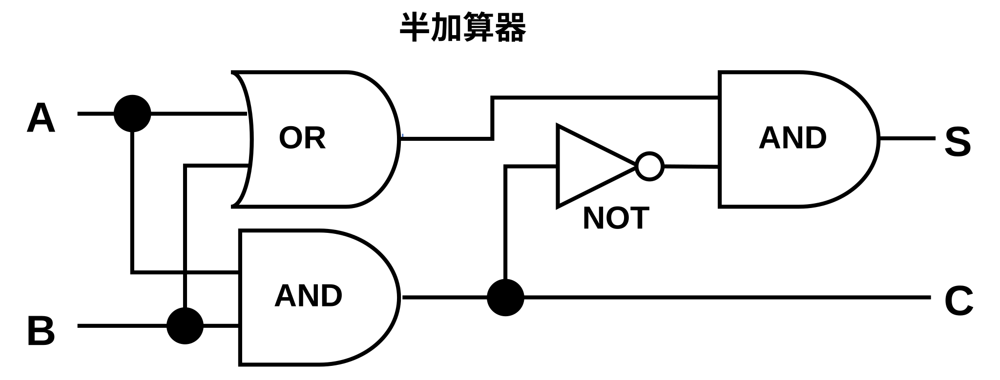

半加算器の回路図から読み取れる論理：
最終的に
# データセクション
.data
input_a: .byte 0 # 入力A
input_b: .byte 0 # 入力B
output_s: .byte 0 # 出力S（和）
output_c: .byte 0 # 出力C（桁上がり）
# テキストセクション
.text
.globl _main
_main:
# 入力値を設定（例：A=1, B=1）
movb $1, input_a # A = 1
movb $1, input_b # B = 1
# 半加算器の実行
call half_adder
# プログラム終了
mov $60, %rax # sys_exit
mov $0, %rdi # exit status
syscall
half_adder:
# 入力値をレジスタにロード
movb input_a, %al # A を al にロード
movb input_b, %bl # B を bl にロード
# S = A XOR B の計算
movb %al, %cl # A を cl にコピー
xorb %bl, %cl # cl = A XOR B
movb %cl, output_s # 結果をSに保存
# C = A AND B の計算
movb %al, %dl # A を dl にコピー
andb %bl, %dl # dl = A AND B
movb %dl, output_c # 結果をCに保存
retmovb: 8ビットデータの移動movb $1, %al: 即値1をalレジスタに格納movb %al, %cl: alレジスタの値をclレジスタにコピーxorb %bl, %cl: XOR演算（排他的論理和）andb %bl, %dl: AND演算（論理積）call half_adder: 関数呼び出しret: 関数からの復帰| A | B | S (A XOR B) | C (A AND B) |
|---|---|---|---|
| 0 | 0 | 0 | 0 |
| 0 | 1 | 1 | 0 |
| 1 | 0 | 1 | 0 |
| 1 | 1 | 0 | 1 |
%al, %bl: 入力値A, Bの格納%cl: XOR演算の結果（和S）%dl: AND演算の結果（桁上がりC）half_adder関数を呼び出し#include <stdio.h>
// C言語での半加算器実装（アセンブリ相当の動作）
void half_adder(int a, int b, int *s, int *c) {
// アセンブリでの XOR 操作に相当
*s = a ^ b; // S = A XOR B
// アセンブリでの AND 操作に相当
*c = a & b; // C = A AND B
}
int main() {
// 実際の計算例
printf("\n計算例:\n");
printf("=======\n");
int s, c;
half_adder(1, 1, &s, &c);
printf("1 + 1 = %d%d (2進数)\n", c, s);
printf(" = %d (10進数)\n", c * 2 + s);
half_adder(1, 0, &s, &c);
printf("1 + 0 = %d%d (2進数)\n", c, s);
printf(" = %d (10進数)\n", c * 2 + s);
return 0;
}計算例:
=======
0 + 0 = 00 (2進数)
= 0 (10進数)
0 + 1 = 01 (2進数)
= 1 (10進数)
1 + 0 = 01 (2進数)
= 1 (10進数)
1 + 1 = 10 (2進数)
= 2 (10進数)